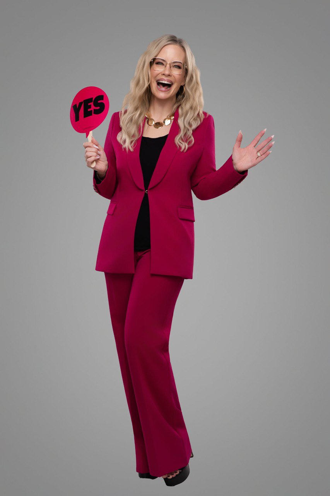
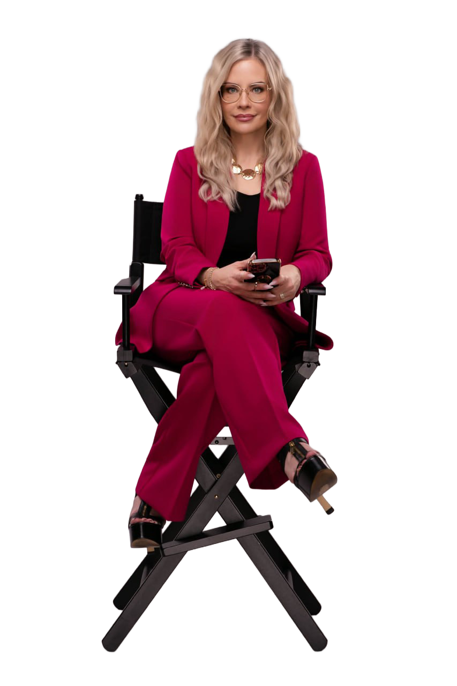
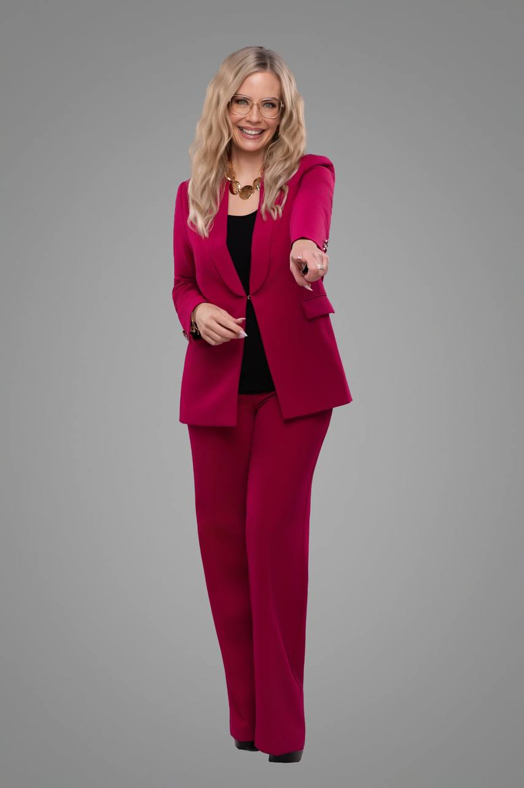

Four days. Real movement. No more starting over. Not someday. Not when you feel ready. Now.

Designed to move you out of overthinking and into decision.
You'll stop circling the same thoughts, get clear on what you already know, and make the decision you've been putting off. From there, you'll take immediate action, build momentum, and start proving to yourself that you follow through.
This isn't about learning something new.
It's about finally choosing something different.
They decide.
They move before certainty. They create clarity through action. They raise their standards and stop operating from delay, doubt, and second guessing.
This experience is designed to help you do the same.
Cleanly, intentionally, and with momentum.

Four days. Real movement. No more starting over. This is where everything shifts.
A simple path. One decision at a time. One stronger standard at a time.
Identify the decision you have been circling and expose the pattern that has kept you in delay.
Remove the internal static. The overthinking, hesitation, and self-protection that have been stealing momentum.
Commit, follow through, and begin moving from a protected yes instead of another unfinished loop.

There comes a point when more reflection is no longer wisdom.
It is delay.
This is for the woman who already knows something needs to shift.
She is ready to become the version of herself who leads from decision, not hesitation.
Where this lands. What it makes possible.
"Say YES. Figure it out later."